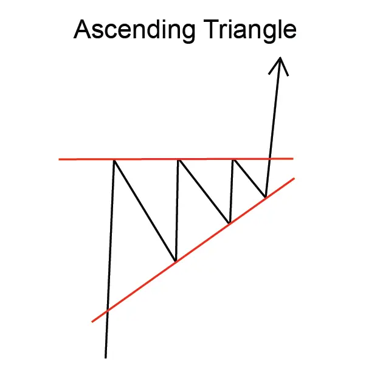
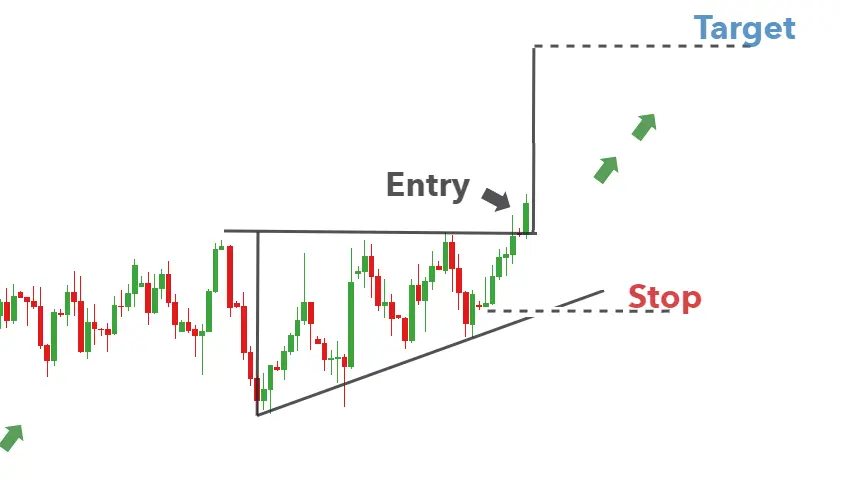

Implication
An Ascending Continuation Triangle is considered a bullish signal. It indicates a possible continuation of the current uptrend.
Description
An Ascending Continuation Triangle shows two converging trendlines. The lower trendline is rising and the upper trendline is horizontal. This pattern occurs because the lows are moving increasingly higher but the highs are maintaining a constant price level. The pattern will have two highs and two lows, all touching the trendlines.
This pattern is confirmed when the price breaks out of the triangle formation to close above the upper
trendline (view Figure 1)

Volume is an important factor to consider. Typically, volume follows a reliable pattern: volume should diminish as the price swings back and forth between an increasingly narrow range of highs and lows. However, when a breakout occurs, there should be a noticeable increase in volume. If this volume picture is not clear, investors should be cautious about decisions based on this Triangle.
Important Characteristics:
The following are important characteristics of this pattern.
1. Occurrence of a Breakout
Technical analysts pay close attention to how long the Triangle takes to develop to its apex. The general rule is that prices should break out - clearly penetrate one of the trendlines - somewhere between three-quarters and two-thirds of the horizontal width of the formation. The break out, in other words, should occur well before the pattern reaches the apex of the Triangle. The closer the breakout occurs to the apex the less reliable the formation.
2. Duration of the Triangle
The Triangle is a relatively short-term pattern. It may take between one and three months to form.
3. Shape of Triangle
The horizontal top trendline need not be completely horizontal but it should be close to horizontal.
4. Volume
Investors should see volume decreasing as the pattern progresses toward the apex of the Triangle. At breakout, however, there should be a noticeable increase in volume.
Trading Considerations
Duration of the Pattern Consider
the duration of the pattern and its relationship to your trading time horizons. The duration of the pattern is considered to be an indicator of the duration of the influence of this pattern. The longer the pattern the longer it will take for the price to move to the target price. The shorter the pattern the sooner the price move. If you are considering a short-term trading opportunity, look for a pattern with a short duration. If you are considering a longer-term trading opportunity, look for a pattern with a longer duration.
Target Price
The target price provides an important indication of the potential price move that this pattern indicates. Consider whether the target price for this pattern is sufficient to provide adequate returns after your costs (such as commissions) have been taken into account. A good rule of thumb is that the target price must indicate a potential return of greater than 5% before a pattern should be considered useful. However, you must consider the current price and the volume of shares you intend to trade. Also, check that the target price has not already been achieved.
Inbound
Trend The inbound trend is an important characteristic of the pattern. A shallow inbound trend may indicate a period of consolidation before the price move indicated by the pattern begins. Look for an inbound trend that is longer than the duration of the pattern. A good rule of thumb is that the inbound trend should be at least two times the duration of the pattern.
Criteria that Support
Support and Resistance
Look for a region of support at the lowest low and a line of resistance at the top of the Triangle.
Moving Average
Compare prices to the 200-day Moving Average. When prices are close to or touch the 200-day Moving Average this signal is considered stronger.
Volume
A strong volume spike on the day of the pattern confirmation is a strong indicator in support of the potential for this pattern. The volume spike should be significantly above the average volume for the duration of the pattern. In addition, the volume during the duration of the pattern should be declining on average.
Criteria that Refute
No Volume Spike on Breakout
The lack of a volume spike on the day of the pattern confirmation is an indication that this pattern may not be reliable. In addition, if the volume has remained constant, or was increasing, over the duration of the pattern, then this pattern should be considered less reliable.
Short Inbound Trend
An inbound trend that is significantly shorter than the pattern duration is an indication that this pattern should be considered less reliable.
Underlying Behavior
This pattern with its increasingly higher lows and constant highs indicates that buyers are more aggressive than sellers. The pattern forms because a supply of shares is available at a fixed price. When the supply depletes, the shares quickly break out from the top trendline and move higher.
